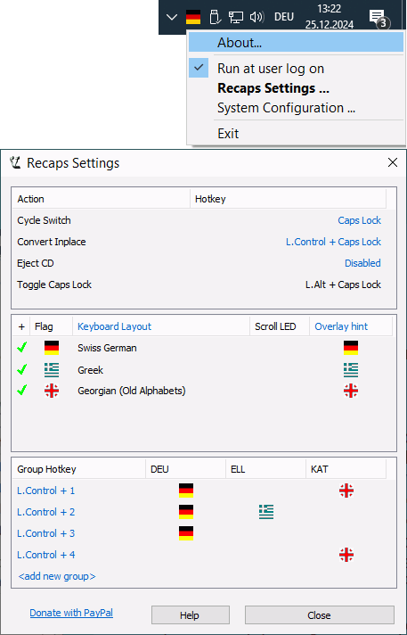

This simple program allows you to switch between languages using only one reconfigurable "Cycle Switch" hotkey - like the CapsLock one that is set by default.
If you have more than two languages installed, you can configure ones you want to switch between into groups, which you can cycle through both with the group hotkey and with the main "Cycle Switch" hotkey.
If you accidentally typed some text in the wrong layout, there is a "Convert Inplace" hotkey that helps to fix it. The success however depends on the current application.
If you are using the default configuration with Caps Lock as a Cycle Switch - original functionality of the Caps Lock key is available with hotkey "Left Alt + Caps Lock".
Additional indication about currently active layout is the country flag in the application icon, ScrollLock keyboard LED and on-screen overlay indicator.
Yet another hotkey may be assigned to execute optional "Eject CD" action. That is may be usefull for notebooks without mechanical eject CD button.
If the installation contains no country flag for your layout - tell us, and we add it to the next version of the program. You can also assign any icon in format 32 x 32 pixels True Colors to the layout. Other formats and sizes are supported too, but may be affected by conversion artifacts, especially on grayed images for disabled layouts.
|
Downloads
ReCaps_V0.9.0.3850.exe (both 32bit & 64bit).
ReCaps_src_V0.9.0.3850.zip (source code)
ReCaps_V0.9.0.3676.exe (both 32bit & 64bit).
ReCaps_src_V0.9.0.3676.zip (source code)
ReCaps_V0.9.0.3480.exe (both 32bit & 64bit).
ReCaps_src_V0.9.0.3480.zip (source code)
ReCaps_V0.9.0.400.exe (both 32bit & 64bit).
ReCaps_src_V0.9.0.400.zip (source code)
ReCaps_V0.9.0.377.exe (both 32bit & 64bit).
ReCaps_src_V0.9.0.377.zip (source code)
|
This program is free software; you can redistribute it and/or modify
it under the terms of the GNU General Public License as published by
the Free Software Foundation; either version 2 of the License, or
(at your option) any later version.
This program is distributed in the hope that it will be useful,
but WITHOUT ANY WARRANTY; without even the implied warranty of
MERCHANTABILITY or FITNESS FOR A PARTICULAR PURPOSE. See the
GNU General Public License for more details.
|
|
|  |
The sample configuration above contains:
- A group of German and Georgian layouts, activated and cycled by "Left Control + 1" hotkey;
- A group of German and Greece layouts, activated and cycled by "Left Control + 2" hotkey;
- A direct hotkey to German layout activated by "Left Control + 3" hotkey;
- A direct hotkey to Georgian layout activated by "Left Control + 4" hotkey;
- As soon as any group is activated - it can by cycled by the CapsLock hotkey;
|
Revisions (by Eli Golovinsky)
- 0.6 Added conversion of text typed with the wrong layout using Ctrl-CapsLock. Alt-CapsLock now changes the old CapsLock mode.
- 0.5 Fixed selected languages configuration not being saved in the registry.
- 0.4 Fixed language not being switched in some applications.
- 0.3 Added a tray icon, a menu and support for more than two languages. Recaps now cycles between the lanugages selected in the menu.
- 0.2 Changed Shift-CapsLock to change language as well as CapsLock. Ctrl-CapsLock now changes the old CapsLock mode.
- 0.1 Initial release.
|
|
Revision history
Version 0.9.00.3850
- Provide both full locale name and keyboard layout name in configuration.
- Restore hot-track cursors handling on Settings' dialog list view headers.
- Fix closing overlay hint configuration dialog on Esc and Close caption button.
- Use complete language names instead of abbreviated in Group list view columns.
- Fix text alignment in custom-drawn headers.
- Allow resizing of Settings dialog width.
- Enable clipping owner drawn list entries during drawing.
- Make correct scaling of configuration UI; using System-wide font size settings.
- More flags were added. Based on download statistics.
Version 0.9.00.3676
- Implement some rudimentary reference for clickable areas in Settings configuration window;
- Prevent opening for multiple Settings configuration dialogs;
- Use Keyboard Layout names instead of Language Names in configuration;
- Fix processing "Toggle" action hotkey if CapsLock was configured as group hotkey;
- Fix restoring disabled state for "Cycle" Action on application restart;
- Improve saving activated group. Use the latest group on system restart;
- Display overlay hint on all monitors in multi-monitor systems;
- Implement flexible configuration for overlay hint fade-off parameters;
- Prevent auto-closing hotkey dialog if hotkey contains "Space" key;
- Extended set of available national flags, based on Recaps download statistics;
Version 0.9.00.3480
- Context menu driven configuration replaced with configuration dialog;
- Support for multikey hotkeys - using modifers like Control, Shift, Alt etc.;
- Added possibility to build groups of keyboard layouts. Every group has its own hotkey to switch on it and may be iteratively switched using main cycle switching hotkey;
- Implement on-screen overlay indicator of the currently active keyboard layout. It is a corresponding flag icon;
- Use 32 x 32 pixels icons instead of 16 x 16 old ones. A lot of new country flags added into installation package;
- Monitor HKCU\Keyboard Layout\Preload registry key to keep list of locales consistency;
- Improve setup package - add support for non-administrative installation mode;
Version 0.9.00.400
- Fix crash on Ctrl-[Key] inplace conversion;
Version 0.9.00.376
- Native support for Windows x64;
- Customizable country flags in application icon;
- Optional "Eject CD" action may be assigned to some key;
- Option "Run at user log on" implemented;
- ScrollLock keyboard LED may be used for indication;
- Support Switch and Eject CD hotkeys customization;
|
|
{kind=link}